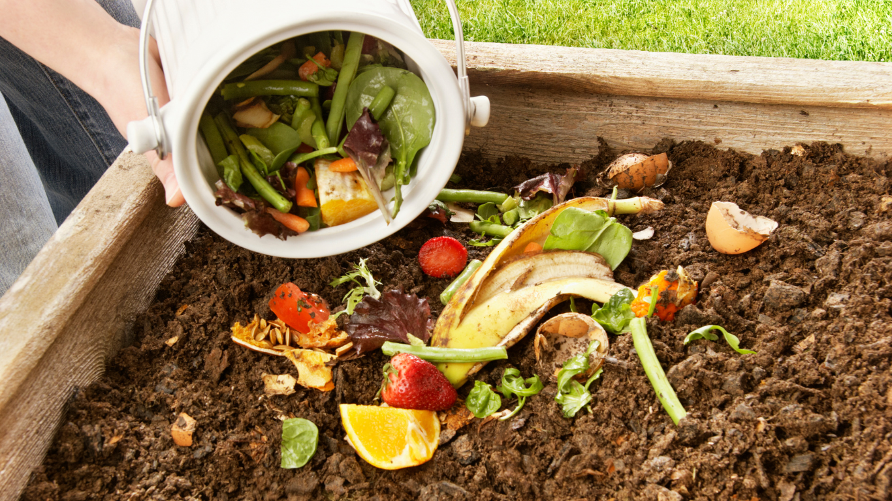
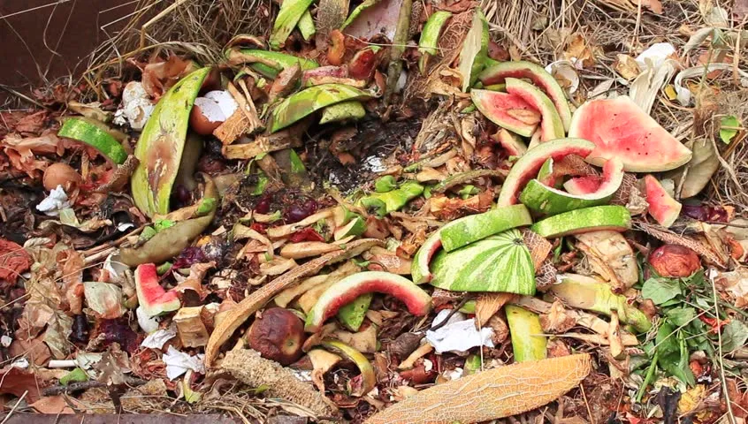

Biodegradable Waste Management

What is Biodegradable Waste?
Biodegradable waste includes organic materials such as food scraps, garden waste, and paper products that decompose naturally and can be turned into compost.

How is Biodegradable Waste Managed?
- Separation of organic waste from non-biodegradable materials.
- Composting to create nutrient-rich soil.
- Vermicomposting using earthworms for faster decomposition.
- Biogas production from organic waste.
Why Proper Waste Management Matters?
Proper disposal of biodegradable waste reduces landfill waste, prevents pollution, and supports soil enrichment through composting.
Biodegradable Waste Management Companies in Nepal

Biocomp Nepal
Specialized in turning organic waste into compost for agriculture.

Doko Recyclers
Transforms biodegradable waste into clean energy.

Eco Wrap Nepal
A leader in organic waste composting and soil enrichment.
Bio Bags Nepal Pvt. Ltd.
Promotes sustainable waste management through eco-friendly solutions.